Беспроводной пылесос Bissell MultiReach 1311J 25,2V
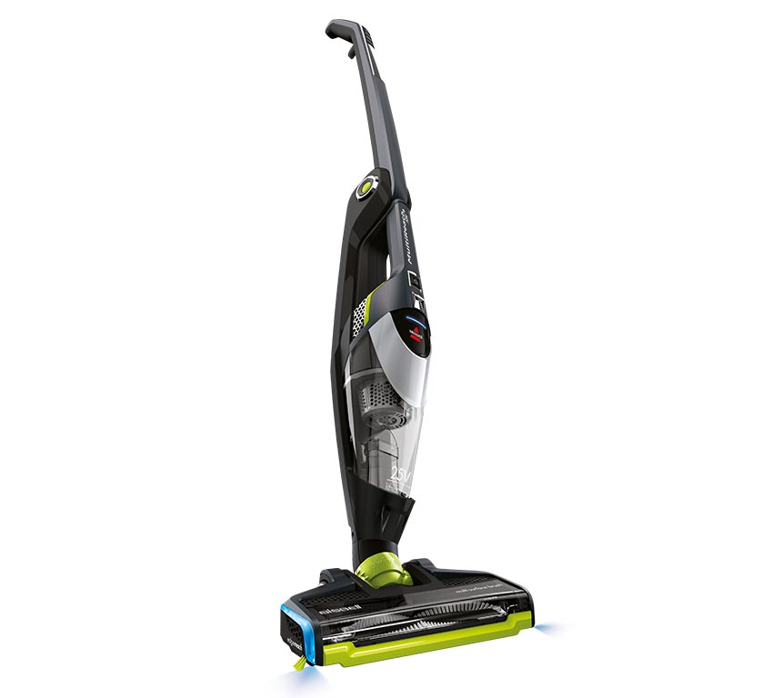Простые в использовании беспроводные вертикальные пылесосы линейки Multireach имеют компактный дизайн и обладают высокой мощностью для повседневной уборки дома.
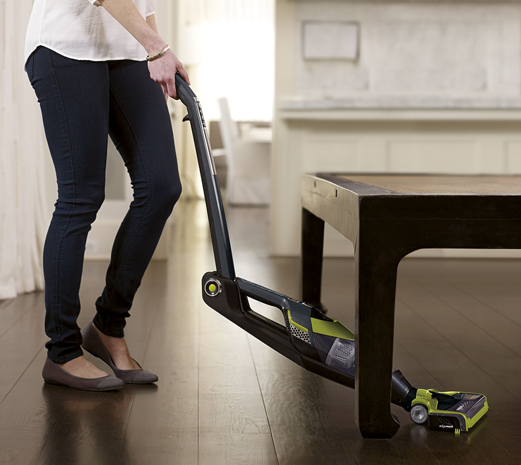Ручка пылесоса Bissell MultiReach 1311J складывается в 2-х направлениях. Это позволяет максимально удобно производить уборку пола под столом, стульями и другой мебелью на высоких ножках.
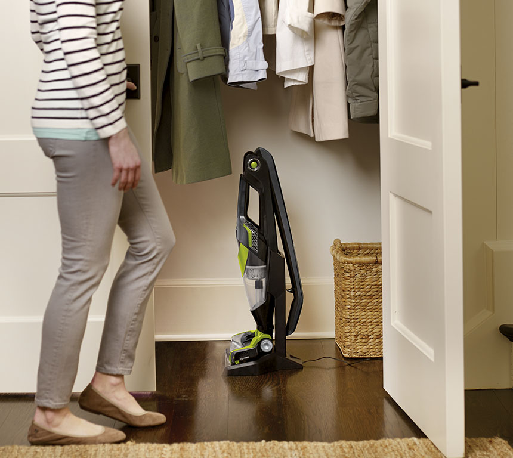Сложив ручку в обратном направлении пылесос приобретает компактные габариты для удобного хранения.
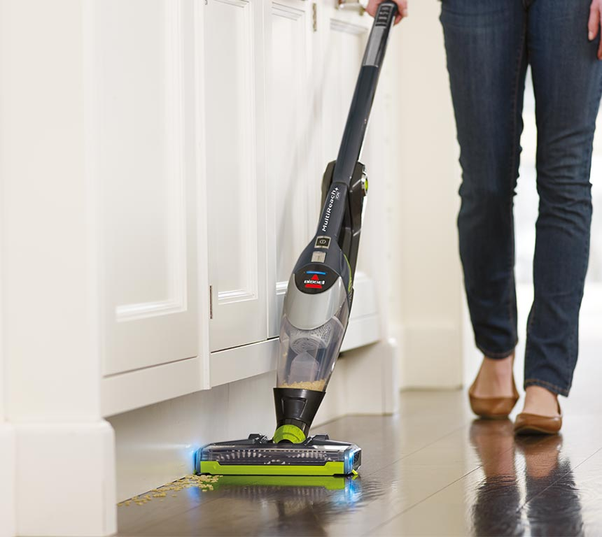Технология EdgeReach – одним нажатием кнопки перераспределяет поток воздуха с центра на торцы насадки, что позволяет максимально эффективно собирать грязь и мусор вдоль плинтусов и в углах. Световые индикаторы по краям насадки подскажут об активации функции и помогут визуально проконтролировать эффективность уборки.
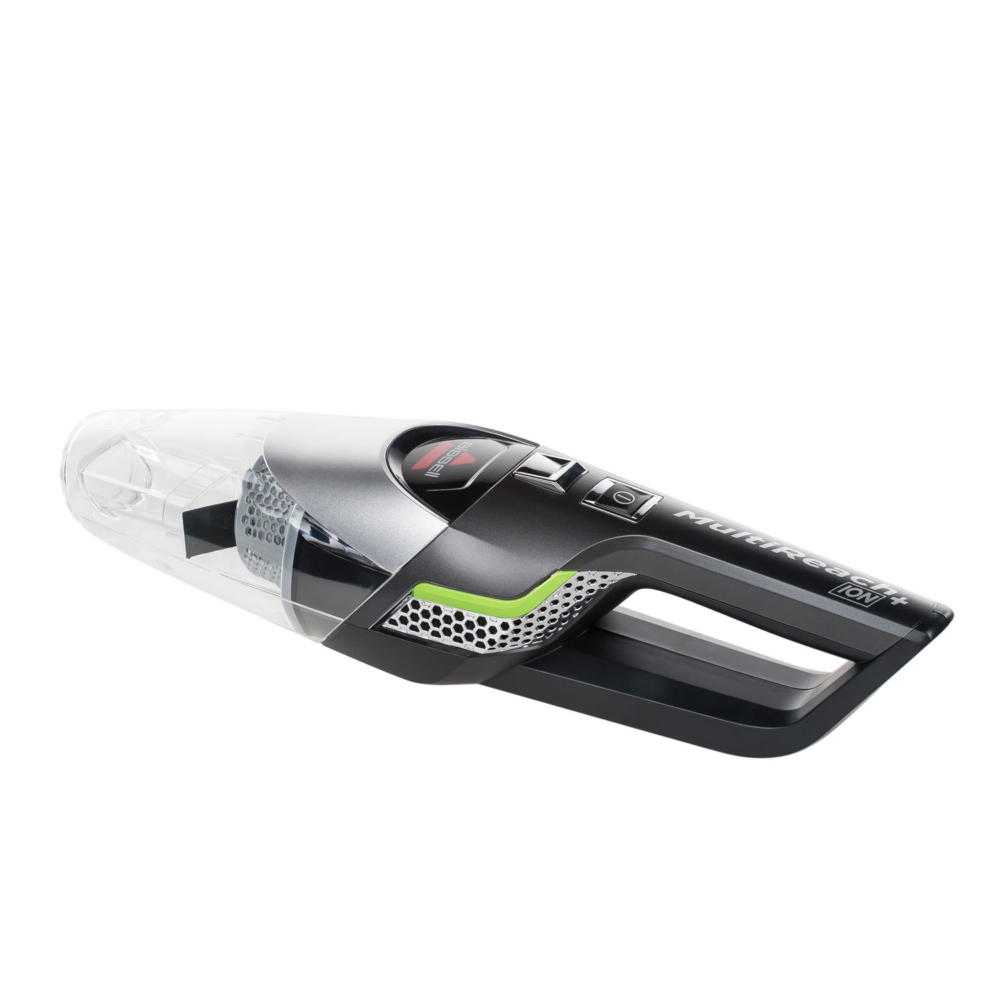Литий-ионный аккумулятор 25,2 V без эффекта памяти заряда, обеспечивает 40 минут непрерывной работы, что позволит убрать несколько комнат на одном заряде батареи. Время зарядки аккумулятора 4 часа. Для контроля готовности пылесоса к работе есть индикатор заряда батареи.
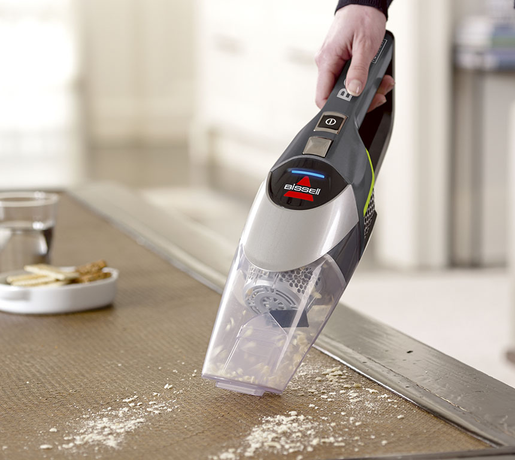Отсоедините съемный модуль и оцените еще большую свободу движения при уборке грязи и мусора, где бы Вы их не обнаружили.
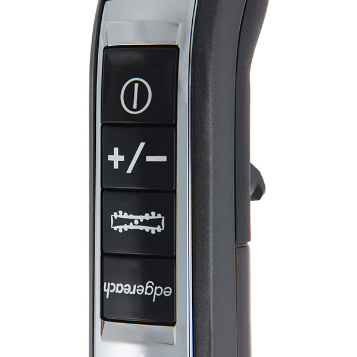Встроенные в ручку кнопки управления позволяют регулировать мощность всасывания. Электрический привод щётки с возможностью отключения вращения вала, обеспечит максимальный комфорт при уборке как ковровых, так и гладких покрытий.
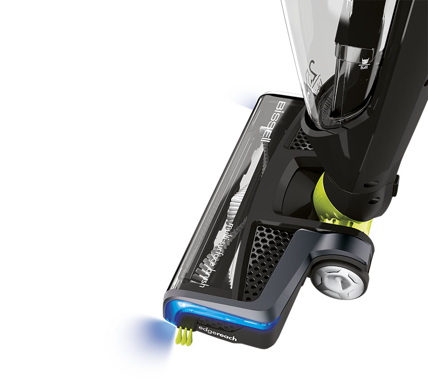Основная насадка имеет подвижное шарнирное соединение с корпусом Swivel, что гарантирует максимальную маневренность и лёгкость при управлении пылесосом.
Для простоты очистки щётки от шерсти домашних животных, волос и ниток вал легко извлекается из насадки.
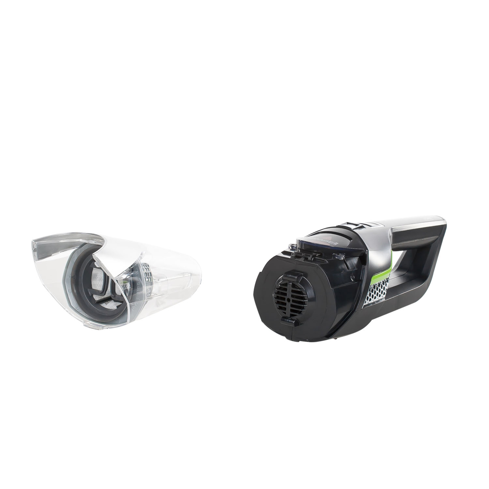Нет необходимости менять мешки, контейнер объёмом 0,4 л легко очистить высыпав мусор в ведро, для обслуживания фильтров достаточно просто промыть их под проточной водой.
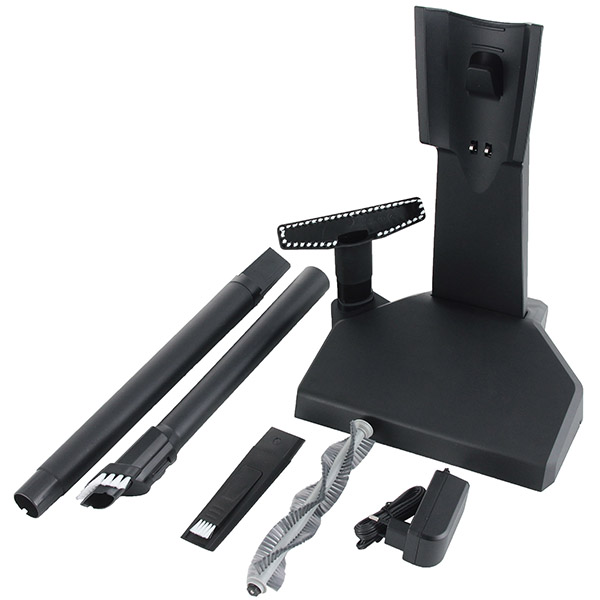Щелевая насадка с выдвижным ворсом и насадка для мягкой мебели упростят уборку поверхностей и труднодоступных мест в доме. Длинная раздвижная насадка позволит производить уборку даже под потолком. Насадки крепятся на базе для зарядки пылесоса. Вал со сплошной щетиной обеспечит качественную уборку твёрдых покрытий.
Аргументы для продажи
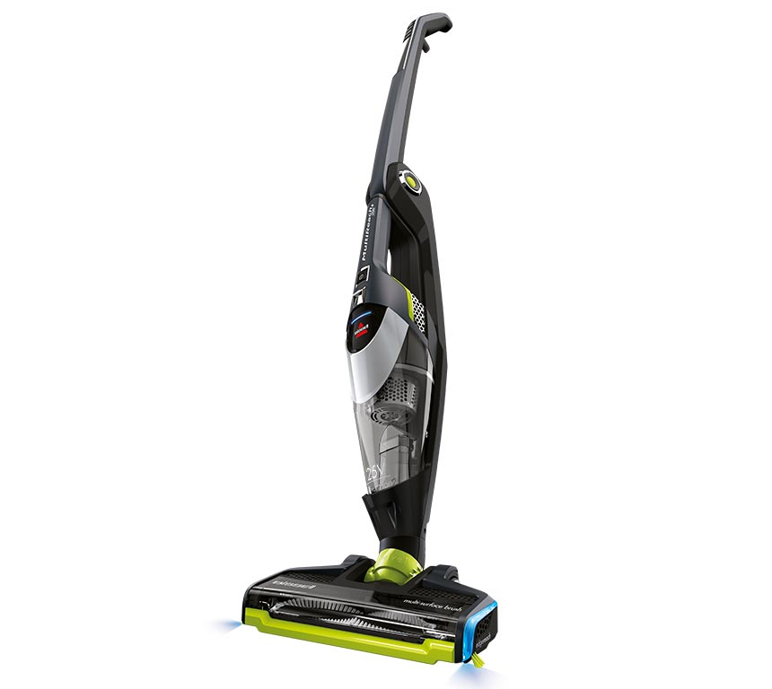- Универсальный беспроводной пылесос со съёмным модулем для уборки всех типов полов и других поверхностей дома
- Литий-ионный с продолжительнм временем работы до 40 мин
- Ручка, складывающаяся в 2-х направлениях
- Компактное хранение
- Технология EdgeReach
- Дополнительный вал для твёрдых покрытий
- Регулировка мощности всасывания
- Щётка с электрическим приводом
- Манёвренность благодаря шарнирному соединению основной насадки
- Дополнительные насадки
- Длинная раздвижная насадка
- База для хранения и зарядки пылесоса
- Индикация заряда батареи
Технические характеристики
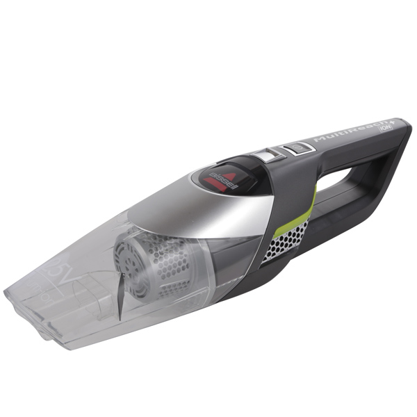
Тип батареи: Литий-ионный аккумулятор на 25,2 V
Объем контейнера для пыли: 0,4 л
Время зарядки: 4 часа
Уровень шума: 80 дБ
Время работы: до 40 минут
Мощность всасывания: 19 аВт
Вес: 2,6 кг
Страна изготовитель: КНР